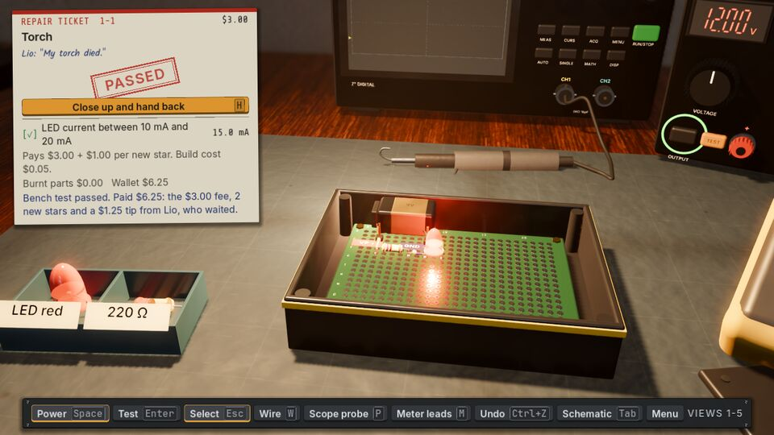
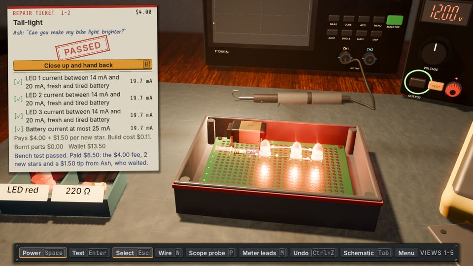
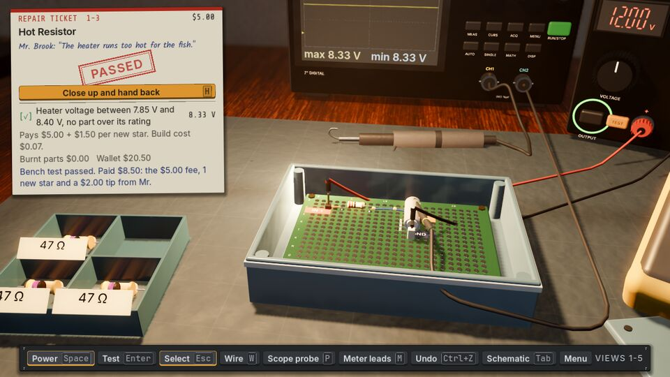
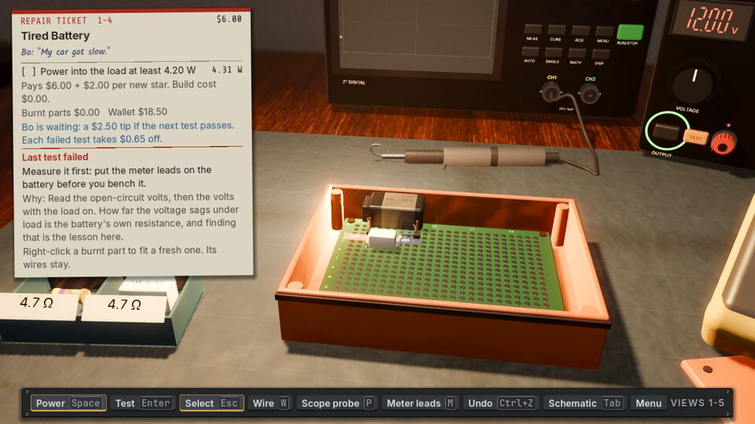
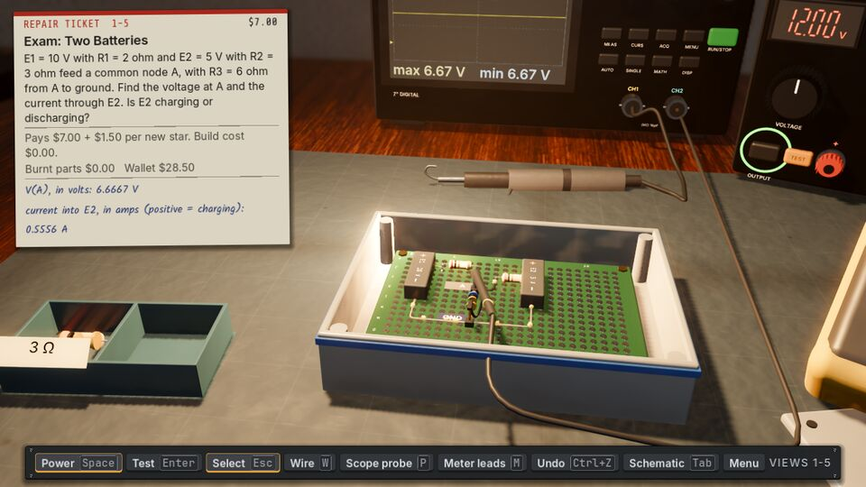

Wiki / Chapter 1
Chapter 1 · First Light
Wren's first page: five tickets at Stall 14, Lantern Lane. Light an LED, share a current, keep a resistor cool, squeeze a tired battery, then sit the exam.
1-1 · Torch

Lio's torch is dead and Lio is ten. Put a red LED on the 9 V battery so it glows and never burns out. Wren says: an LED has no resistance of its own, so you must add some.
On the bench: The LED sits straight across the 9 V clip with no resistor: fit one in series with it.
The bench checks
- LED current between 10 mA and 20 mA
Parts tray: Red LED 5 mm, Carbon-film resistor 5 %
1-2 · Tail-light

Ash rides home after dark and wants a tail-light with three red LEDs on one 9 V battery, bright and even, and it must still work when the battery is tired. Wren: LEDs in a row share one current.
On the bench: Three LEDs in series on one resistor. Measure the current before you change anything.
The bench checks
- LED 1 current between 14 mA and 20 mA, fresh and tired battery
- LED 2 current between 14 mA and 20 mA, fresh and tired battery
- LED 3 current between 14 mA and 20 mA, fresh and tired battery
- Battery current at most 25 mA
Parts tray: Red LED 5 mm, Carbon-film resistor 5 %
1-3 · Hot Resistor

Mr. Brook's aquarium heater is a fixed 50 ohm element (soldered on the board, between the OUT and GND pads) and the supply gives 12 V. The heater needs a voltage between 7.85 V and 8.4 V, measured across it (OUT to GND). Put a resistor in series, from IN to OUT, to drop the rest, and mind how hot that resistor gets. Wren: watts are heat.
On the bench: A link wire puts the full 12 V on the heater element. It needs 8 V.
The bench checks
- Heater voltage between 7.85 V and 8.40 V, no part over its rating
Parts tray: Carbon-film resistor 5 %
1-4 · Tired Battery

Bo's toy car has a tired battery pack: its voltage sags when it works hard. Choose the load resistor that gets the most power out of it. Wren: measure first, guess later.
On the bench: The load resistor is burnt. Measure the pack before you choose a new one.
The bench checks
- Power into the load at least 4.20 W
Parts tray: Carbon-film resistor 5 %, 5 W wirewound resistor
1-5 · Exam: Two Batteries exam

E1 = 10 V with R1 = 2 ohm and E2 = 5 V with R2 = 3 ohm feed a common node A, with R3 = 6 ohm from A to ground. Find the voltage at A and the current through E2. Is E2 charging or discharging? Predict first, then build and probe.
On the bench: Predict first, then build and probe.
The bench checks
- Your prediction: V(A), in volts
- Your prediction: current into E2, in amps (positive = charging)
- Voltage at A within 0.1 % of the textbook answer
- Current into E2 within 0.1 % of the textbook answer
Parts tray: Exact resistor